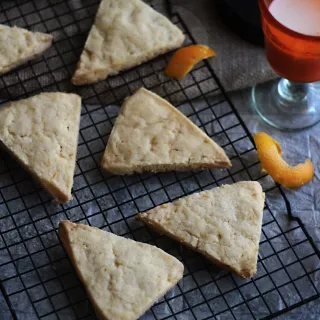

Sansa's sweet biscuits

A recipe for sweet biscuits, orange shortbread, inspired by the book series, Game of Thrones, A Song of Ice and Fire.
Ingredients
- 2 cups / 9oz / 255g - all purpose flour
- 1/2 cup / 3.5oz / 100g - granulated sugar
- zest of one orange
- 1/2 tsp - salt
- 2 sticks / 8oz / 226g - unsalted butter room temperature
- 1/2 tsp - vanilla extract
- In a stand mixer fitted with a paddle attachment, cream together the sugar, butter, and zest until combined.
- Combine the flour and salt and add it to the mixer on medium speed in two to three additions. Continue to mix on medium speed until the mixture comes together to form a ball of dough.
- Press the mixture into a 8" ring mold or a spring form pan. Once you've gently pressed the mixture into an even layer, refrigerate for 30 minutes until firm.
- Preheat the oven to 350F.
- Unmold the shortbread onto your work surface and slice the circle into 8 pieces. Bake for 25-30 minutes until it gets a light golden color. Let cool and serve.